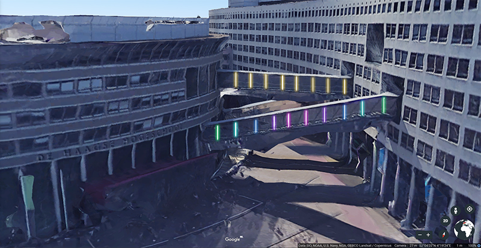

The lecture about playful interaction was full of viral video’s I already had seen in other classes and in my free time. Nonetheless, I enjoyed watching them again. This time I thought more about how the work and what their purpose is. We got our assignment for the week.
Assignments
This week’s assignment encouraged us to come up with a playful interaction for our The Hague University of Applied Science (THUAS) building.

I came up with the idea to place RGB LED strips between every window of the suspended walkways between the Oval part of the Slinger. Then I would use a high precisian accelerometer to measure vibrations of these bridges and connect them to an Arduino. I would write a simple program that would make each LED strip change color depending on the vibrations of the bridges.
The bridge closes to the entrance is often referred to as the worst flight of stairs in the work. The light effect would encourage students to take them anyway. Taking the bridge with your classmates make the effect intensify and you could interact from one bridge to another by walking in the same tempo.
It would be played as a single player or a multiplayer interaction. Cooperative and competitive. It would be a shared object, but each bridges lights can be compared with one another. This interaction would truly be a hybrid of playful interactions layouts.
Research
I was watching a interview of Elon Musk at E3 where he showcased new games for their Tesla vehicles. This was during the HCI course and this playful interaction got me really exited. They let you use the steering wheel and brake peddle to controls cars on their big screens. Tesla does this to make waiting at a super charger more fun. Its basically just an existing game but the way you play it is very interesting to me. They also can see the model and color of the car were the game is played on and use that as the car in the game. The game can also be played as a multiplayer with touchscreen controls on the display itself. The game is also very competitive. The times are compared and you can use power-ups.
As I wrote before, I already knew a lot of playful interactions. Mainly because they generate a lot of publicity and can have a big impact in our society. It was interesting to me to here the story behind all these projects during the lecture. I got a lot of inspiration and had a clear understanding how they worked. I had a hard time coming up with an interesting idea for the assignment. But when I was flew over the THUAS building in Google Earth and panned around it I came up with the idea to make the stairs more interesting. I didn’t want to the already known piano stairs so I came up with a vibration detecting one the uses light. I’m happy with the result and liked making the visualization. I hope to encounter more playful interactions in the future and this topic exceeded my expectations.